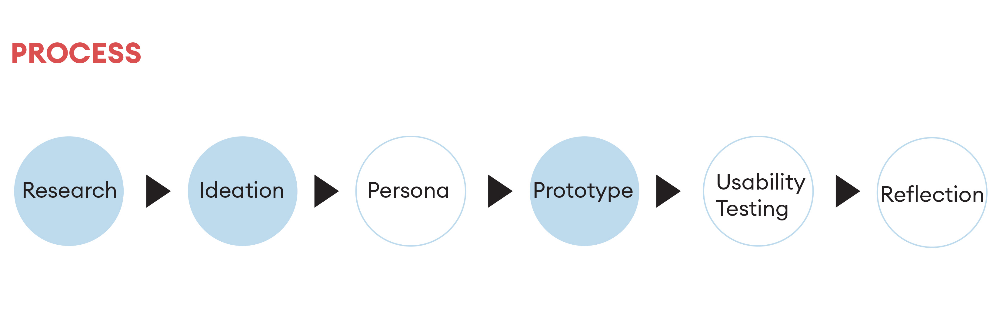
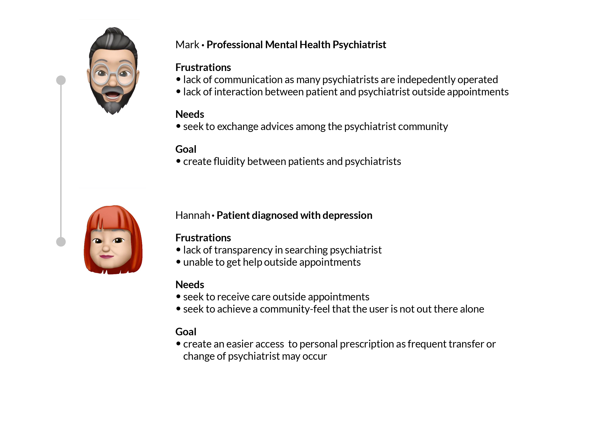
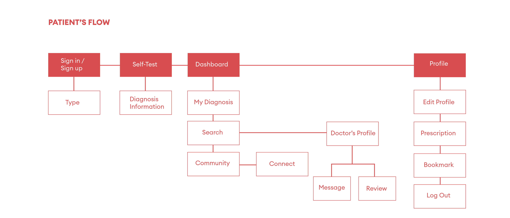
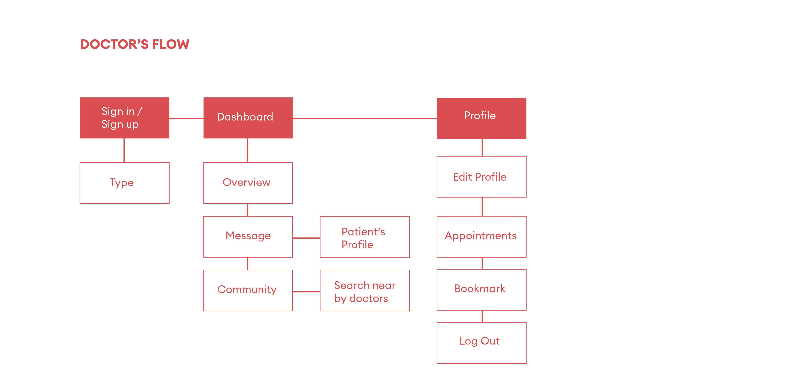
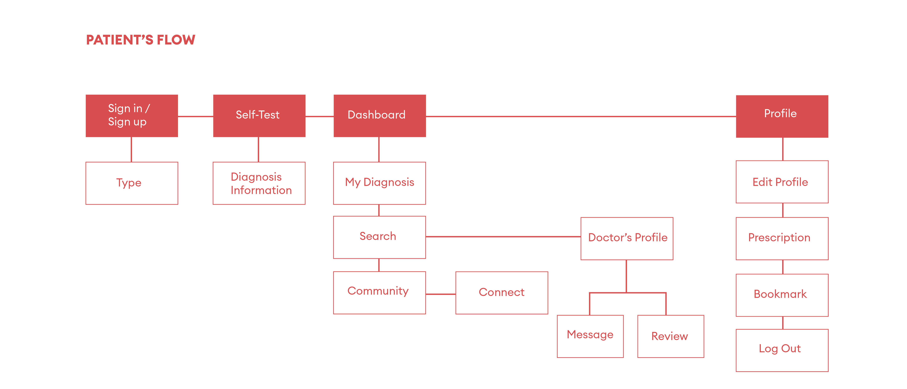
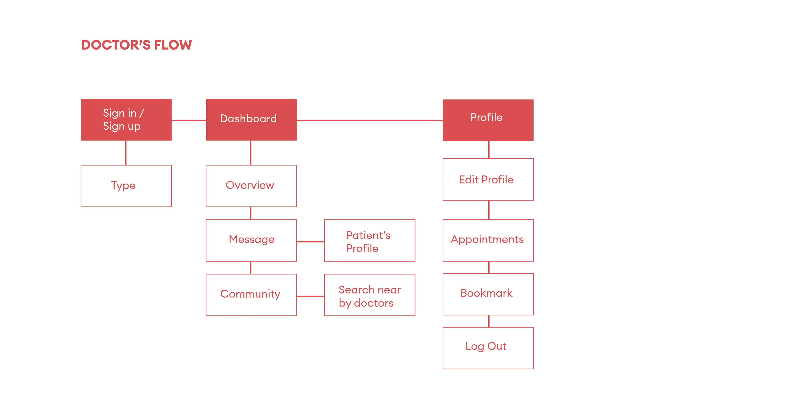
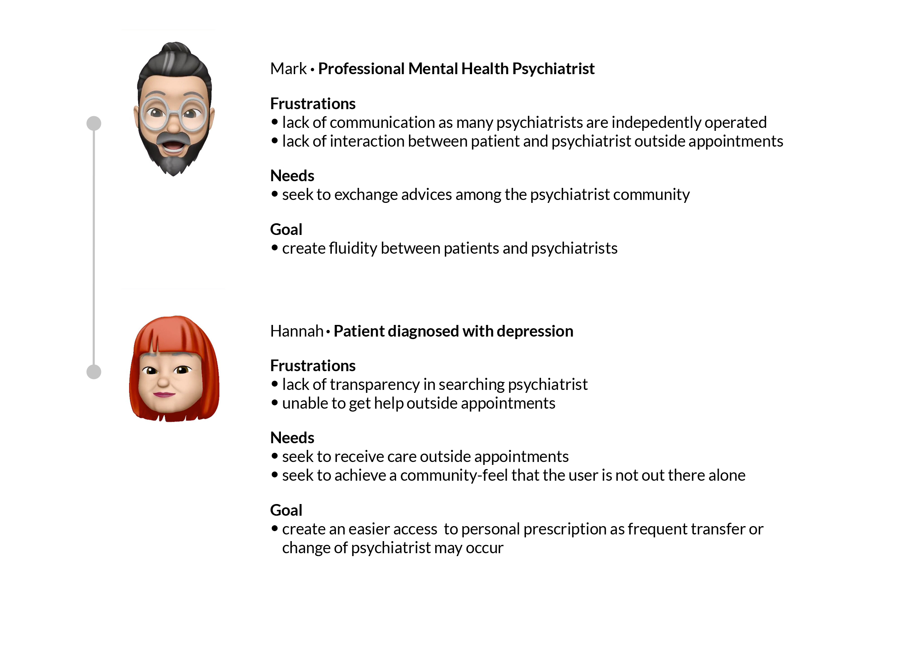
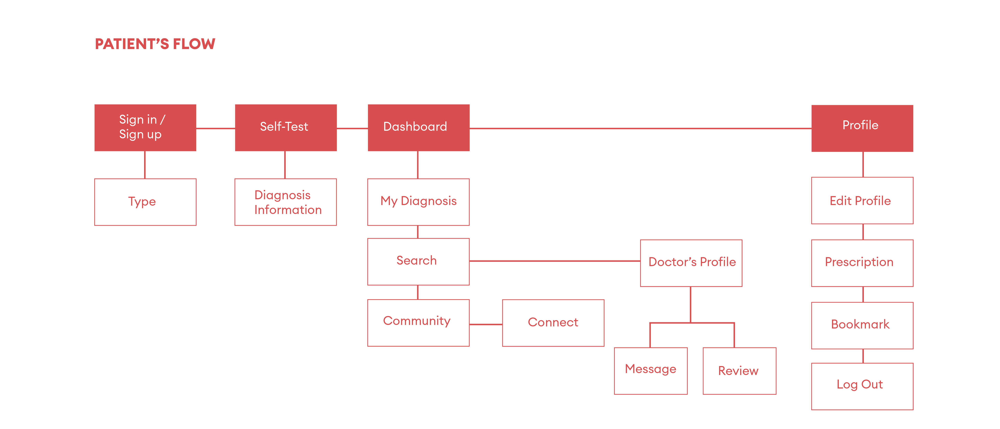
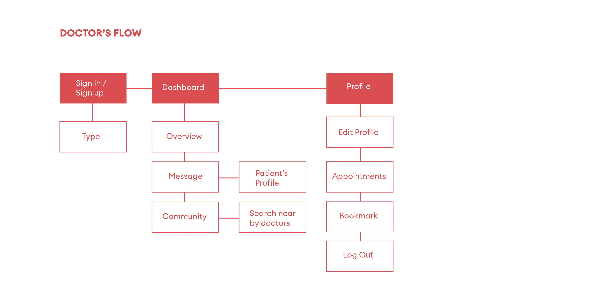

CHECKUP
2018
UI/UX Design
People who experience mental illness often do not receive enough support to lessen the pain they go through. Most notably, selected have responded that their closest companions, families, or friends are unaware of the fact that the person is much in pain. This personal application enables the users to communicate with qualified doctors, therapists, and other patients near by to make the process more convenient.


 





1. HomePage

2. Dashboard & Connect

3. Search

4. Message & Review

5. Profile


User 1 mentions, "the need of next and go back buttons, and labels of what the circles mean on 'Connect' page." User 2 mentions, "understands the purpose of this applicatoin and well designed but the navigation needs to be more stream line and was difficult to grasp the functionality of 'Connect'." User 3 mentions, "the navigation is clear, straightforward and the design was appealing."
RESEARCH
In many cases, individuals who experience mental illness do not receive adequate treatment and miss the 'Golden Time' that it can be treated. Recent news of celebrities committing suicide due to being neglected was the starting point of this application. A continous treatment is needed to lessen the pain.
PERSONA

IDEATION


STYLE GUIDE
GOAL
Checkup aims to provide a better understanding of what the illness is and make the treatment process go more efficiently. The user is able to find people who struggle near by to form a community and also someone qualified who can help with the problems.
1. HomePage
This is the landing page of the application. When the user chooses to sign up, it navigates to 'Type' page to choose the account type. Then, it proceeds to 'Sign Up' page where the user can include the account details.
2. Dashboard & Connect
After the user completes a set of question, it navigates to Dashboard which includes three options: Diagnosis Information, Search. and Connect. 'Connect' enables the user to locate near by patients to create a healty community to fight the mental disorder together.
3. Search
Another option on the Dashboard is 'Search. It can also be navigated from the hamburger menu on the left. 'Search' allows the user to find near by psychiatrists with an access to call.
4. Message & Review
By clicking the profile icon, the user can view the ratings of the psychiatrist. On the hamburger menu, the user can directly chat with the psychiatrist. When swiped left, the hamburger menu slides closed.
5. Profile
By clicking my profile, the user can edit profile, view a pdf version of the prescription, navigate to 'Bookmark', and log out. 'Bookmark' shows all the saved-as-favorite songs and books that the user has personalized.
Patient's Onboarding
Doctor's Onboarding